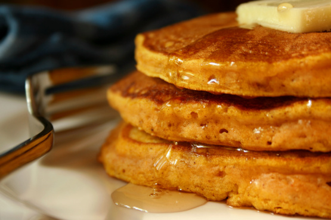

-
Light and Fluffy Pumpkin Pancakes
Ingredients
Serving 4 unit US 1 1/4 cups all-purpose flour 2 tablespoons sugar 2 teaspoons baking powder 1⁄2 teaspoon cinnamon 1⁄2 teaspoon nutmeg 1⁄2 teaspoon ginger 1⁄2 teaspoon salt 1 pinch clove 1 cup 1% low-fat milk (can be any kind) 6 tablespoons canned pumpkin puree 2 tablespoons melted butter 1 egg Directions
Whisk flour, sugar, baking powder, spices and salt in a bowl. In a separate bowl whisk together milk, pumpkin, melted butter, and egg. Fold mixture into dry ingredients. Spray or grease a skillet and heat over medium heat: pour in 1/4 cup batter for each pancake. Cook pancakes about 3 minutes per side. Serve with butter and syrup. Makes about six 6-inch pancakes.
-
Creamy Cajun Chicken Pasta

Ingredients
Serving 2 unit US 2 boneless skinless chicken breast halves, cut into thin strips 4 ounces linguine, cooked al dente 2 teaspoons cajun seasoning (your recipe, Cajun Seasoning Mix or store-bought) 2 tablespoons butter 1 thinly sliced green onion 1-2 cup heavy whipping cream 2 tablespoons chopped sun-dried tomatoes 1⁄4 teaspoon salt 1⁄4 teaspoon dried basil 1⁄8 teaspoon ground black pepper 1⁄8 teaspoon garlic powder Directions
Place chicken and Cajun seasoning in a bowl and toss to coat. In a large skillet over medium heat, sauté chicken in butter or margarine until chicken is tender, about 5 to 7 minutes. Reduce heat add green onion, heavy cream, tomatoes, basil, salt, garlic powder, black pepper and heat through. Pour over hot linguine and toss with Parmesan cheese.
-
Cheese Tortellini Pesto Pasta Salad

Ingredients
Serving 10 unit US 1 (14 ounce) can artichoke hearts, drained, quartered 1 (10 ounce) cont. grape tomatoes, halved lengthwise 1 green bell pepper, diced 1 (20 ounce) package cheese-filled egg tortellini, cooked al dente, drained (fresh or frozen) 1⁄3 cup olive oil, more if needed 1⁄4 cup parmesan cheese, the kind in the can 1 (8 ounce) jar basil pesto 1⁄2 teaspoon salt, more if needed 2 teaspoons minced garlic 12 ounces mozzarella cheese, cubed 8 ounces half of a 1 lb. box rotini pasta, cooked al dente, drained Directions
Cook pastas, set aside to drain and cool a bit. In large bowl or punch bowl, add rest of ingredients, folding gently til well mixed. Gently fold in pastas well. Adjust seasoning to taste, meaning, add more salt, parmesan, etc., til you like it. Serve immediately, or refrigerate. *If you make this say a day ahead of time, you'll need to "refresh" this. Just add a bit more olive oil, salt and parmesan before serving. This salad is best, though, room temp, or even slightly warm.